HOBRO DIGITAL
Captures desktop
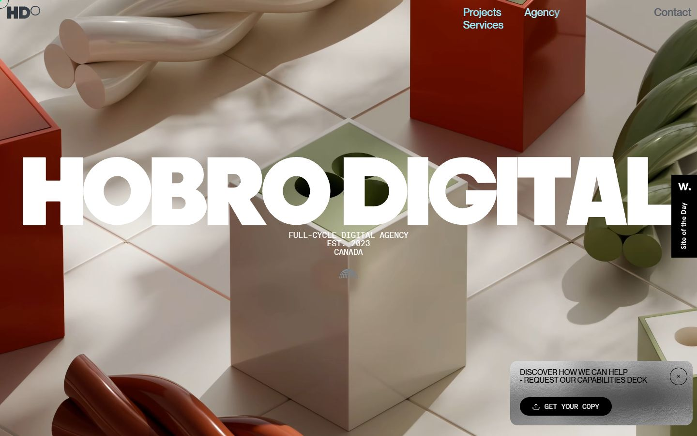

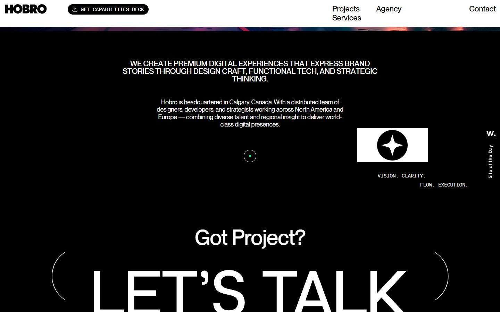
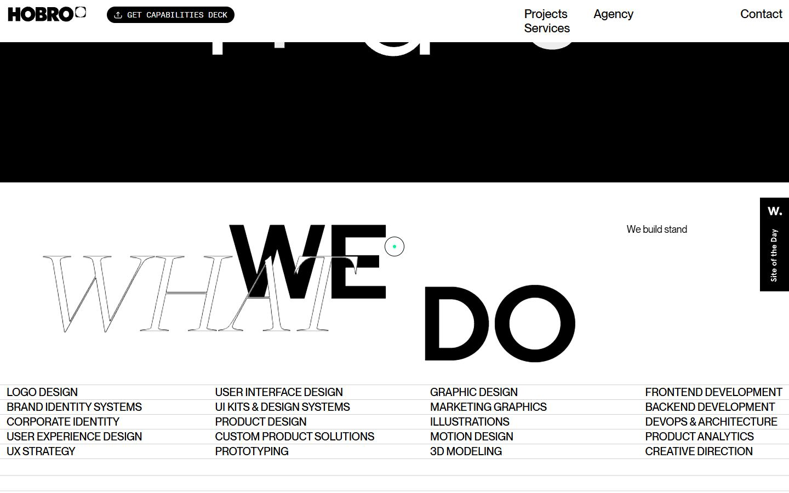
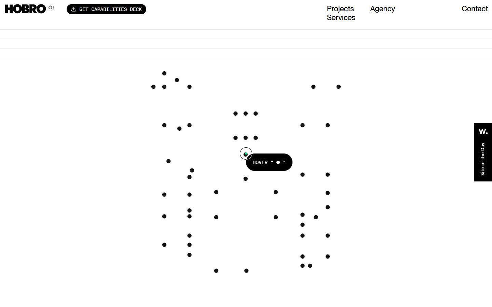
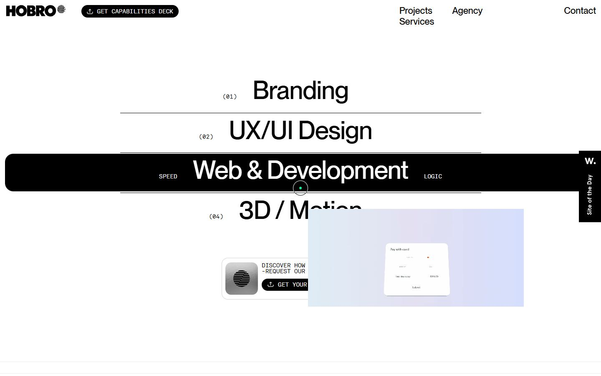
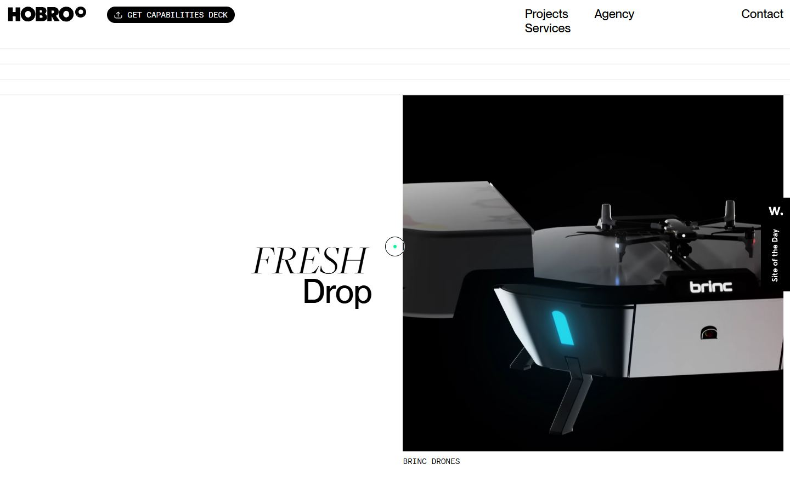
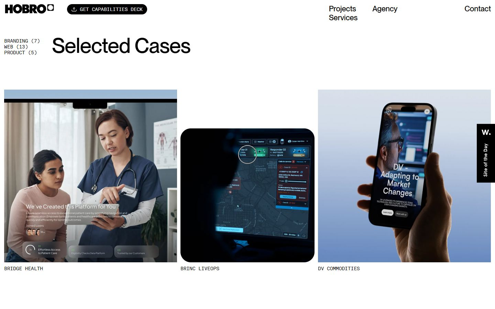
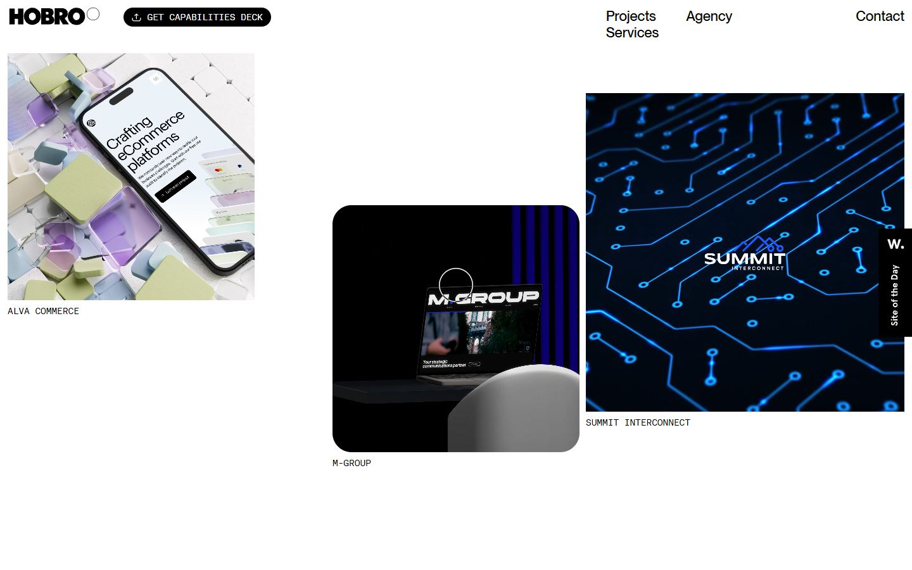
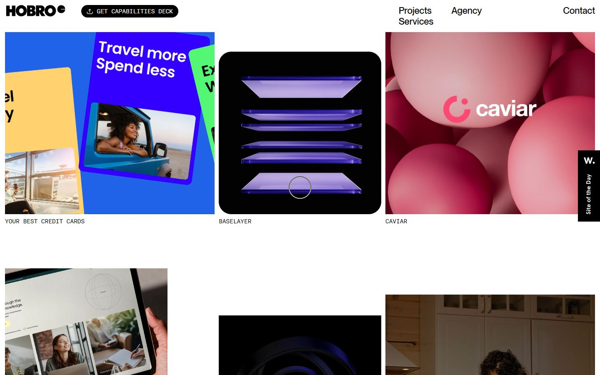
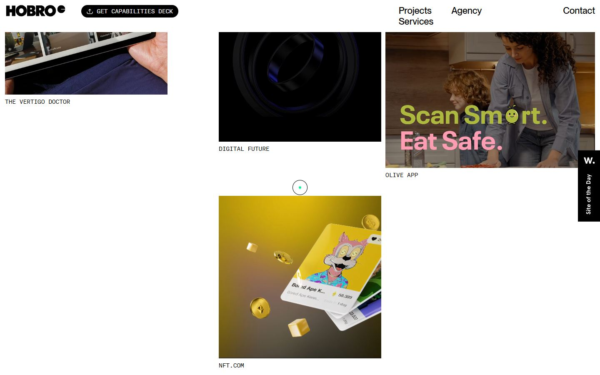
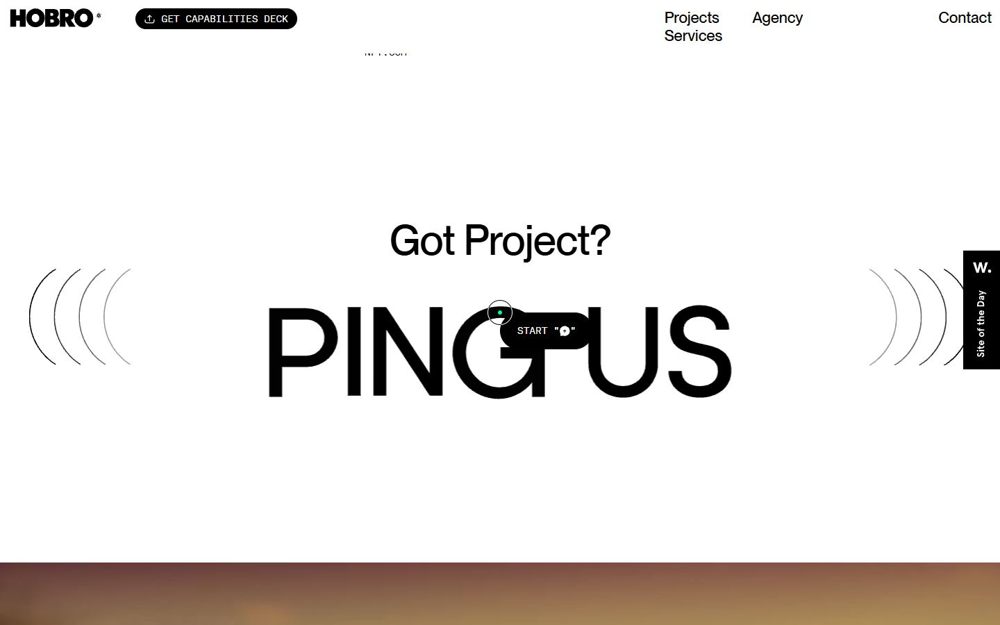
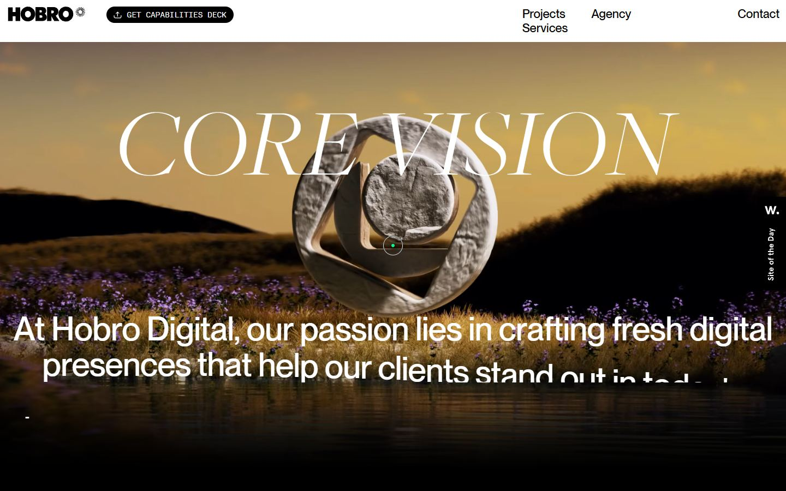
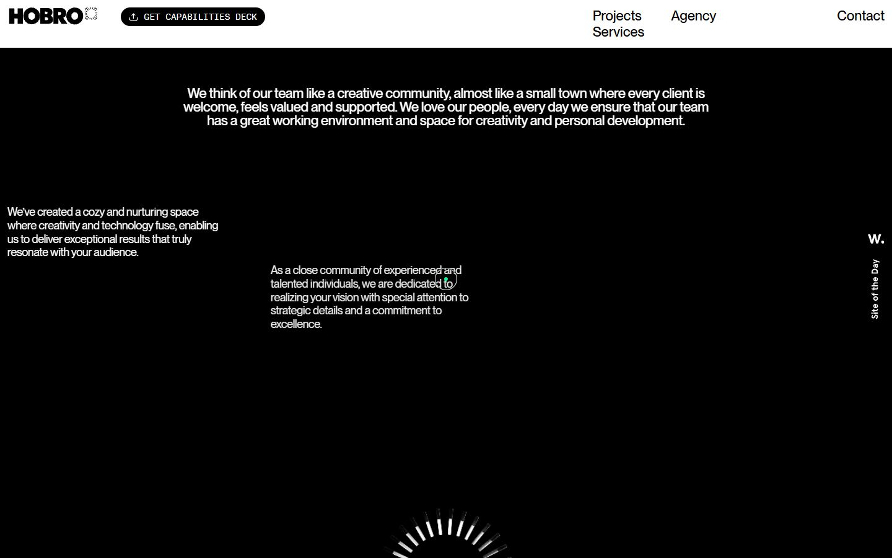
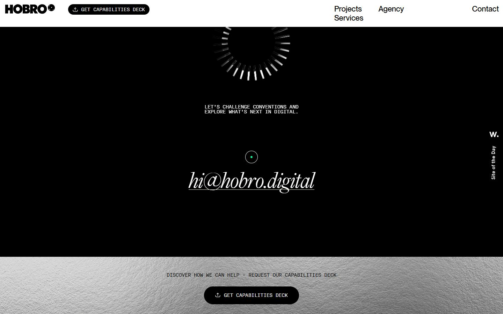
Pages internes


Mobile
Stack détectée
CMS Contentful, DrawSVG/MorphSVG, GSAP, Howler (audio), Lenis, Lottie, ScrollTrigger, SplitText/SplitType, Virtual scroll, jQuery
Versions : GSAP 3.12.7 · Three.js r?
Design tokens
Couleurs (fonds, pondérées par surface)
#000000 · #ffffff · #dddddd · #00fb96
Couleurs de texte
#000000 · #ffffff
Polices utilisées (par volume de texte)
PPNeueMontreal · AkkuratMonoLLWeb · Kamerik205 · FreigBigProLigIta
Fichiers de police chargés
Typographie
| Élément | Police | Taille | Graisse | Interligne | Interlettrage | Casse |
|---|---|---|---|---|---|---|
| h2 | PPNeueMontreal, Helvetica, Arial, sans-serif | 16px | 400 | 24px | normal | none |
| h3 | PPNeueMontreal, Helvetica, Arial, sans-serif | 16px | 500 | 16px | -0.24px | uppercase |
| p | PPNeueMontreal, Helvetica, Arial, sans-serif | 18px | 400 | 21.6px | -0.27px | none |
| a | PPNeueMontreal, Helvetica, Arial, sans-serif | 22px | 500 | normal | normal | none |
| button | AkkuratMonoLLWeb, Arial, sans-serif | 14px | 500 | 14px | normal | uppercase |
| li | PPNeueMontreal, Helvetica, Arial, sans-serif | 16px | 400 | 24px | normal | none |
| body | PPNeueMontreal, Helvetica, Arial, sans-serif | 16px | 400 | 24px | normal | none |
Échelle des tailles de texte
60px (260) · 18px (249) · 14px (212) · 22px (123) · 16px (85) · 12px (26) · 20px (20) · 180px (18) · 67.5px (16) · 33.75px (15) · 75px (4) · 21px (4) · 16.5px (3) · 80px (2) · 217.5px (1) · 10.5px (1)
Arrondis
50% · 33px · 15px · 100% · 14px
Transitions CSS fréquentes
Points de rupture (media queries)
1023px · 1024px · 767px · 768px · 1025px · 919px · 1920px · 599px · 1439px · 1921px · 1440px · 769px
Animations CSS (@keyframes)
fadeInOut, moveUp, marquee, animate-svg-logo, curtains, title-scale, toTop, slideUp
Variables CSS (:root)
--side-gutters: 1rem; --header-height: 4rem; --c-brand-primary: #00FB96; --c-brand-secondary: #DBDCCA; --c-bg-primary: #000; --c-bg-secondary: #fff; --c-scroll: #d5d4d4; --c-bg-aims: #161616; --fz-base: 16; --c-font-primary: #000; --c-font-secondary: #fff; --c-font-error: #E6B0B0; --c-font-subtitle: #000; --font-title: Kamerik205,Arial,sans-serif; --font-text: PPNeueMontreal,Helvetica,Arial,sans-serif; --font-cursive: FreigBigProLigIta,Arial,sans-serif; --font-typewriter: AkkuratMonoLLWeb,Arial,sans-serif; --c-border-default: #636262; --c-border: 1px solid var(--c-border-default); --c-border-grid: #4141413B; --cursor-dot: var(--c-brand-primary); --cursor-circle: #000; --loader-scale: 0.09; --anim-fallback-delay: 0s; --anim-default-delay: .27s; --anim-default-time: .75s;
Structure de la home
Hauteur : 15934 px — 2567 nœuds DOM — canvas 0, vidéos 60, images 212
| # | Bloc | Hauteur | Titre | Médias |
|---|---|---|---|---|
| 1 | section .about js-about | 900 | HOBRO DIGITAL | 14 |
| 2 | section .stickers stickers-box-js | 1052 | 17 | |
| 3 | section#services .wwd | 1464 | What We DO | 0 |
| 4 | section .features | 817 | Discover How We Can Help -Request Our Capabilities Deck | 6 |
| 5 | section#projects .cases | 3954 | Fresh Drop | 14 |
| 6 | div .cta cta--inverse | 274 | 9 | |
| 7 | section#agency .aims | 2367 | Core Vision | 1 |
| 8 | section .capabilities-cta-full-width ccfw | 175 | Discover How We Can Help - Request Our Capabilities Deck | 1 |
| 9 | section .partners | 715 | Clients BRANDS | 0 |
| 10 | section .team | 2258 | Our core identity | 27 |
| 11 | footer .footer | 1148 | HOBRO LNK | 1 |
Navigation : Projects · Services · Agency · Contact · +1 (587) 326-3456 · hi@hobro.digital · privacy policy
Boutons / CTA : GET CAPABILITIES DECK · GET YOUR COPY · Submit
SEO
Plan des titres
Performance (mesure locale, Chrome headless, connexion non bridée)
Mobile
Fichiers
captures/ : arrivée, scroll desktop (1440×900), pleine page, pages internes, mobile (390×844 @2x) ; vidéo de scroll dans la release GitHub « videos » (lien en haut de fiche)page.html : DOM rendu · styles.css : CSS chargé · scripts/ : JS chargé (index dans _index.json) · shaders.glsl : shaders extraits · rea-bundle.json : analyse REA du bundle (chunks, routes, endpoints)